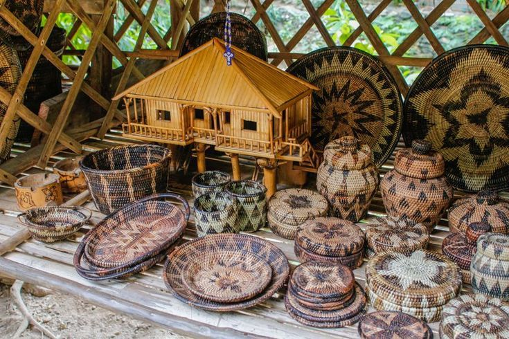

Batanes may be small, but its festivals are full of color, meaning, and cultural pride.
Major Festivals
Batanes Day Festival
September 25 | Basco, Batan Island
Celebrated every September 25, this event marks the founding anniversary of Batanes as a province. Activities include cultural shows, boat races, street dancing, food fairs, and exhibits showcasing Ivatan traditions and products.
Irarairaira Festival
February | Various municipalities
A celebration of the Ivatan fishing culture. Communities come together to honor the sea with boat blessings, traditional songs, and communal meals made from freshly caught seafood.
Pagpapanaog ng Palay
October | Basco, Batan Island
A harvest festival where Ivatans give thanks for a good rice and root crop harvest. Celebrations include traditional folk songs called kalusan, communal cooking, and offerings to ancestors.
Patron Saint Fiestas
Throughout the year | All barangays
Each barangay in Batanes celebrates the feast day of its patron saint with Mass, processions, traditional dances, and shared meals with neighbors and visitors.
Ivatan Culture & Traditions
Vakul & Kanayi
The vakul is a traditional headgear worn by Ivatan women, woven from voyavoy palm leaves. The kanayi is its male equivalent. Both protect the wearer from rain and strong winds and are still used today.
Kalusan
Traditional Ivatan folk songs sung during farming, fishing, and community celebrations. Kalusan are a living oral tradition that connects modern Ivatans to their ancestors and to the natural world around them.
Faluwa Building
The faluwa is the traditional Ivatan boat used for inter-island travel. Building one is a community effort — neighbors gather together to help, reflecting the Ivatan value of mano or communal cooperation.

Ivatan Handicrafts
Ivatan handicrafts are hand-made expressions of a culture that has survived centuries of isolation and strong typhoons. The most famous are the vakul and kanayi, but artisans also produce woven baskets, pottery, and wooden carvings.
These crafts are not just souvenirs — they are functional items with deep cultural meaning. Making a vakul, for example, can take several weeks of careful hand-weaving.
You can buy authentic handicrafts at local markets in Basco or directly from artisan cooperatives on the islands.
The Ivatan Spirit of Community
One of the most important values of Ivatan culture is mano — helping one another without expecting anything in return. This value is visible in their festivals, in the way they build houses together, and in the famous Honesty Stores found throughout Batanes.